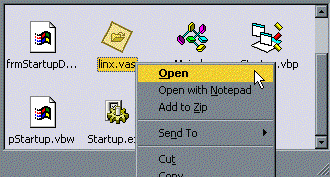
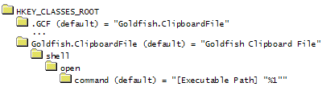
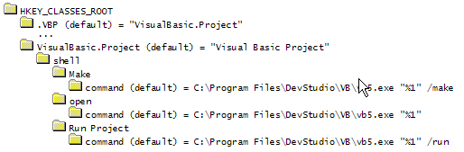
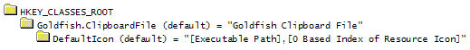

VB5 Startup Demonstration (43K)
VB5 Startup Demonstration (43K)
 VB6 Startup Demonstration (41K)
VB6 Startup Demonstration (41K)
 15 Feb 2004
15 Feb 2004
Fixed missing downloads.
The code now correctly restoring and activates Windows on all systems, and the bug with restoring iconic Windows (incorrect constant) has been fixed.
 Subclassing Without The Crashes
Subclassing Without The Crashes
 Enumerating Windows Using the API
Enumerating Windows Using the API

Registering File Associations and Passing Command Line Parameters to an Existing App Instance
A robust method for integrating your application with the Shell
Many windows applications register file associations. When you double click on an associated file, it is nice to have the flexibility to decide what happens. Without code, VB applications work like the Notepad SDI model - if you double click on a .TXT file you get a new instance. But other apps, for example Microsoft Word and WinZip, detect if a window is already open to handle the file, and if it is that window is used to open the file.
This article demonstrates how to register associations and an easy-to-use module which can pass any parameters to an existing instance of your application.
Associating Files and Using the Same Instance to Handle Them
To achieve this effect you need to be able to do three things:
- Register a file association.
- Detect whether an instance of your app is running or not.
- Send the command line of one instance of your app cross-instance to the existing one.
These are covered in turn.
1. Registering a File Association
Associating a file type is achieved through the registry. For example, say you want to associate files of type *.GCF with your app, calling them "Goldfish Clipboard Files". Then you need to set up the following in the registry:
File association set up in the registry
The simplest way to do this is to use the CreateEXEAssociation method of the vbAccelerator cRegistry class. Once you have done this, then when a user double clicks on the file with the extension specified Windows will shell your application, passing the filename on the command line. You can get this from VB's Command function.
The above registry structure creates a default Open association. You can also add other associations so when a user right clicks on a file or selects it and chooses the File menu in explorer additional menu items apply. For example, VB5 creates the following structure to provide the Open, Make and Run commands for .VBP files:
VB File Associations, showing additional verbs for Make and Run
This functionality is available through the cRegistry class CreateAdditionalEXEAssociations function. Check the demo project code to see how it works.
The final thing you can do for a fully professional effect is to associate a particular icon with documents associated with your application. This is achieved by setting a registry key like this:
Setting the Icon to display for a file
The [0 Based Index of Resource Icon] should be an index to an icon resource within your project. Resource identifier 0 is automatically created for VB EXEs and is the executable's icon. However, you can add further icon resources to your application through a resource file. Note: you cannot use the Resource Editor VB Add-in (provided with VB6, and available for VB5 from the MS VB Programmer's area) to do this because all resources it creates are private and not exposed to the outside applications. You must instead use the external resource compiler RC.EXE to do this instead.
The default icon setting can also be set through cRegistry's CreateEXEAssociation method. The demonstration provides a resource script and the code used to do this.
If you only want to create an SDI app which has multiple instances, that is all you need to do. But if you want to control what happens next, then read on...
2. Detect whether an instance of your app is running or not
This could be the easy bit, but I decided to make it harder. vbAccelerator isn't about advanced source code for nothing you know!
The easy way of checking whether your app is running is to use the PrevInstance property of VB's App object. For 99% of cases this will work perfectly well. However, if your app has a long start-up time, it is possible for App.PrevInstance to return False even when there is an existing instance running. If you relied on App.PrevInstance there is small but problematic possibility that you get two instances of your app.
To be sure only one instance runs, you can take advantage of the Mutex functions provided in Win32, which are normally used for thread synchronisation. You can create a virtually unlimited number of Mutex handles in Win32. Each one has it's own name and handle value. The only disadvantage of this method occurs in the VB IDE. A Mutex applies to an entire process, and when you are debugging an application in the VB IDE it runs in the VB IDE's process. So if you create a Mutex in the IDE, but fail to destroy it for some reason (say for example you do a nasty and press the stop button) then the Mutex continues to exist until the IDE is closed. Clearly this makes things difficult to debug, so my code works around this by using App.PrevInstance unless the app is running as compiled code. To detect whether you are in the VB IDE or not is easy but a hack... check it out!
Private Declare Function CreateMutex Lib "kernel32" Alias "CreateMutexA" _
(ByVal lpMutexAttributes As Long, ByVal bInitialOwner As Long, ByVal lpName As String) As Long
Private Declare Function CloseHandle Lib "kernel32" (ByVal hObject As Long) As Long
Private Const ERROR_ALREADY_EXISTS = 183&
Private m_hMutex As Long
Private m_bInDevelopment As Boolean
' Change this line to match your app:
Private Const mcTHISAPPID = "vbAcceleratorGOLDFISH"
Public Sub Main()
' Check if this is the first instance:
If (WeAreAlone(mcTHISAPPID & "_APPLICATION_MUTEX")) Then
' Do startup code here:
Else
' Pass command line if not empty, or
' activate existing app:
Endif
End Sub
Private Function WeAreAlone(ByVal sMutex As String) As Boolean
' Don't call Mutex when in VBIDE because it will apply
' for the entire VB IDE session, not just the app's
' session.
If InDevelopment Then
WeAreAlone = Not (App.PrevInstance)
Else
' Ensures we don't run a second instance even
' if the first instance is in the start-up phase
m_hMutex = CreateMutex(ByVal 0&, 1, sMutex)
If (Err.LastDllError = ERROR_ALREADY_EXISTS) Then
CloseHandle m_hMutex
Else
WeAreAlone = True
End If
End If
End Function
Public Function InDevelopment() As Boolean
' Debug.Assert code not run in an EXE. Therefore
' m_bInDevelopment variable is never set.
Debug.Assert InDevelopmentHack() = True
InDevelopment = m_bInDevelopment
End Function
Private Function InDevelopmentHack() As Boolean
' .... '
m_bInDevelopment = True
InDevelopmentHack = m_bInDevelopment
End Function
Public Function EndApp()
' Call this to remove the Mutex. It will be cleared
' anyway by windows, but this ensures it works.
If (m_hMutex <> 0) Then
CloseHandle m_hMutex
End If
m_hMutex = 0
End Function
The CreateMutex calls probably have many other uses I haven't thought of yet..
3. Send the command line of one instance of your app cross-instance to the existing one.
The code so far has been fairly trivial. Now we get on to why you need subclassing to achieve this task and also delve into the Windows API a bit more.
Sending a command line to another instance can be broken down into two parts:
- Firstly, how do you find a window?
- Secondly, how do you pass data across instances?
So, how do you find a window? There are various techniques to achieve this. But I warn you that a large number of the published versions are based on Win16 code which can't really be guaranteed to work under Win32. Without exception all the rest I have seen rely on some part of the window's caption or class name to find a window. Now I don't know about you but I find the whole idea of finding a window given that the caption is something like "My Cool App -*" and that its class is "ThunderWindowClass" somewhat less than desirable.
The worst thing these dubious methods is that you can do it properly with very few lines of code. For further reference to the methods I describe here, see my articles Enumerating Windows using the API and the methods in Subclassing without the Crashes - Use Window's built-in database to store information against hWnds.
The first thing you should do if you want to locate a window is to give it a property that guarantees you can find it again. To make sure you can find it, just choose a string value for the property that no-one else is going to use. (BTW: If you're really serious about this, use the appropriate OLE function to create a new GUID!) Once you have a string, use the SetProp method to associate the string and a long value with the window.
Having done, this you need to loop through all top-level windows to find the one which has the unique string value you set. To loop through top-level windows in Win32, you must use the EnumWindows function (using any other method could result in continuous loops or a failure to identify all top-level windows because Win32's pre-emptive Multi-Threading could modify the window list before you get them. Particularly in multi-processor NT systems). Here is the code I use to set the properties and get the top-level windows:
Private Declare Function EnumWindows Lib "user32" _
(ByVal lpEnumFunc As Long, ByVal lparam As Long) As Long
Private Declare Function GetProp Lib "user32" Alias "GetPropA" _
(ByVal hWnd As Long, ByVal lpString As String) As Long
Private Declare Function SetProp Lib "user32" Alias "SetPropA" _
(ByVal hWnd As Long, ByVal lpString As String, ByVal hData As Long) As Long
Private m_hWndPrevious As Long
' Change this line:
Private Const mcTHISAPPID = "vbAcceleratorGOLDFISH"
'... Sub Main frament:
' We have an existing instance.
' First try to find it:
EnumerateWindows
' If we get it:
If (m_hWndPrevious <> 0) Then
' Send information:
End If
' ... End
Public Sub TagWindow(ByVal hWnd As Long)
' Applies a window property to allow the window to
' be clearly identified.
SetProp hWnd, mcTHISAPPID & "_APPLICATION", 1
End Sub
Private Function IsThisApp(ByVal hWnd As Long) As Boolean
' Check if the windows property is set for this
' window handle:
If GetProp(hWnd, mcTHISAPPID & "_APPLICATION") = 1 Then
IsThisApp = True
End If
End Function
Public Function EnumWindowsProc( _
ByVal hWnd As Long, _
ByVal lparam As Long _
) As Long
Dim bStop As Boolean
' Customised windows enumeration procedure. Stops
' when it finds another application with the Window
' property set, or when all windows are exhausted.
bStop = False
If IsThisApp(hWnd) Then
EnumWindowsProc = 0
m_hWndPrevious = hWnd
Else
EnumWindowsProc = 1
End If
End Function
Public Function EnumerateWindows() As Boolean
' Enumerate top-level windows:
EnumWindows AddressOf EnumWindowsProc, 0
End Function
The final stage is how to send information across processes. Sending information can be achieved in many ways, but one of the easiest is to use Window's WM_COPYDATA message. This message is used with the SendMessage function and is a wrapper around the more complicated File Mapping interprocess communication method. It is ideal when you are sending a small amount of information, say less than 4Kb.
You call the WM_COPYDATA message with SendMessage like this:
Public Const WM_COPYDATA = &H4A
Public Type COPYDATASTRUCT
dwData As Long ' A long value to pass to other application
cbData As Long ' The size of the data pointed to by lpData
lpData As Long ' A pointer to data
End Type
Private Declare Function SendMessage Lib "user32" Alias "SendMessageA" _
(ByVal hWnd As Long, ByVal wMsg As Long, ByVal wParam As Long, lParam As Any) As Long
Public Sub SendData(ByVal hWndTo As Long, ByVal sString As String, ByVal lData As Long)
Dim b() As Byte
Dim tCDS As COPYDATASTRUCT
If (sString <> "") Then
b = StrConv(Command, vbFromUnicode)
tCDS.dwData = lData
' Add Null Char:
tCDS.cbData = UBound(b) + 1
' Set lpData to point to the byte array
tCDS.lpData = VarPtr(b(0))
Else
ReDim b(0 To 0) As Byte
tCDS.dwData = lData
tCDS.cbData = 1
' Set lpData to point to byte array of Null Char:
tCDS.lpData = VarPtr(b(0))
End If
SendMessage hWndTo, WM_COPYDATA, 0, tCDS
End Sub
This sends the message to the window hWndTo. Now you need to receive it and process it in the main window of the receiving application. This is achieved by subclassing the window for the WM_COPYDATA message:
Option Explicit
' Implement the subclassing interface:
Implements ISubclass
Private Sub Form_Load()
' Start subclassing:
AttachMessage Me, Me.hWnd, WM_COPYDATA
End Sub
Private Sub Form_QueryUnload(Cancel As Integer, UnloadMode As Integer)
' stop subclassing:
DetachMessage Me, Me.hWnd, WM_COPYDATA
End Sub
Private Property Let ISubclass_MsgResponse(ByVal RHS As SSubTimer.EMsgResponse)
' Not needed.
End Property
Private Property Get ISubclass_MsgResponse() As SSubTimer.EMsgResponse
' This will tell you which message you are responding to:
' WM_COPYDATA, send response after we've done with it:
ISubclass_MsgResponse = emrPostProcess
End Property
Private Function ISubclass_WindowProc( _
ByVal hWnd As Long, ByVal iMsg As Long, _
ByVal wParam As Long, ByVal lParam As Long _
) As Long
Dim tCDS As COPYDATASTRUCT
Dim b() As Byte
Dim sCommand As String
Select Case iMsg
Case WM_COPYDATA
' Copy for processing:
CopyMemory tCDS, ByVal lParam, Len(tCDS)
If (tCDS.cbData > 0) Then
ReDim b(0 To tCDS.cbData - 1) As Byte
CopyMemory b(0), ByVal tCDS.lpData, tCDS.cbData
sCommand = StrConv(b, vbUnicode)
' We've got the info, now do it:
ParseCommand sCommand
End If
End Select
End Function
Public Sub ParseCommand(ByVal sCommand As String)
' Here you do with the command line whatever
' you need for the application.
End Sub
With this in place you can now fully achieve files associations and pass information between instances. The only things remaining to consider are:
- If the window you are passing the command to is iconized, you probably want to restore it. Send a WM_COMMAND message with the wParam set to SC_RESTORE to the window handle.
- If the window is hidden (say the application resides in the SysTray) then you will want to make it visible even when there is no command line. I do this by passing an empty command line to the application.
The full source for the main module is provided in the demonstration download, and this is the same source which is used in the Goldfish demonstration application.
Conclusion
Registering file associations and making sure only a single application responds to them is something which isn't built in to VB and there are a few wrinkles involved in performing it reliably. This article provides a robust method and some easy to re-use code for doing it.